§ 7.06 Besondere Liegestellen
Rheinschiffahrtspolizeiverordnung
1. | Auf Liegestellen, bei denen eines der Tafelzeichen E.5.4 bis E.5.15 (Anlage 7) aufgestellt ist, dürfen nur die Fahrzeugarten stilliegen, für die das Tafelzeichen gilt. |
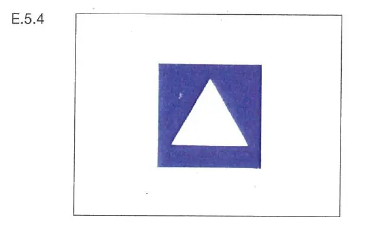 | 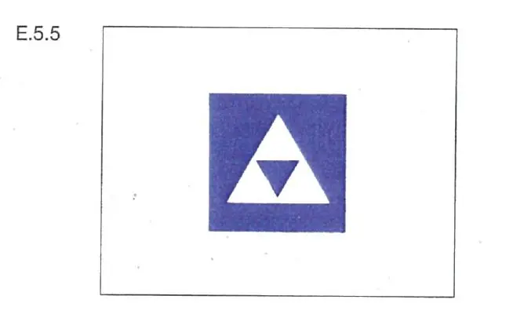 |
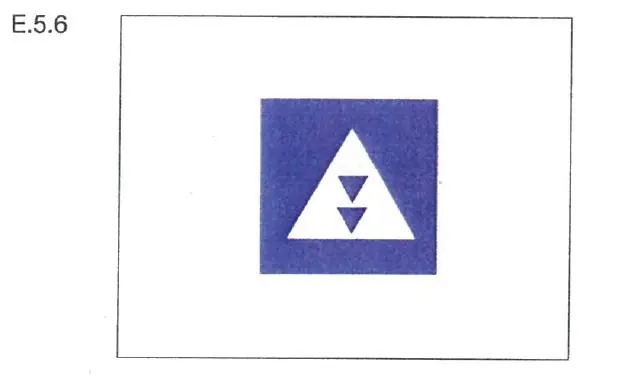 | 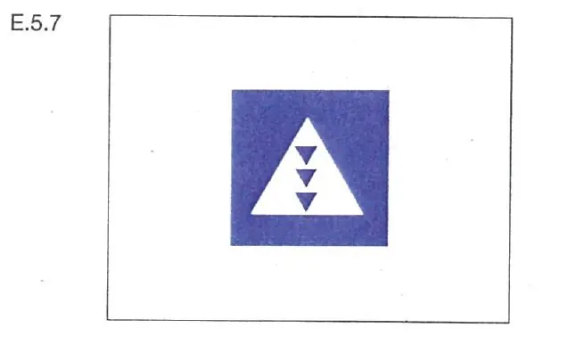 |
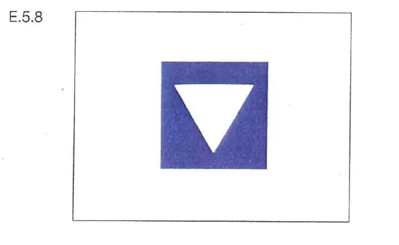 | 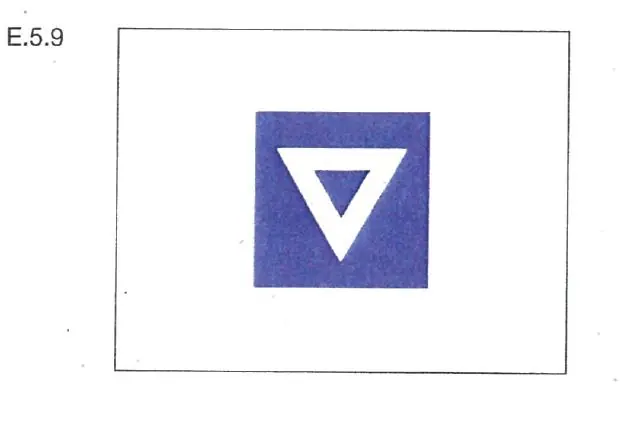 |
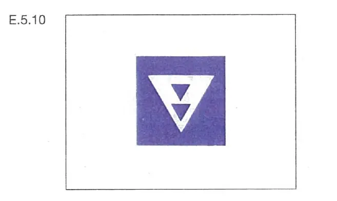 | 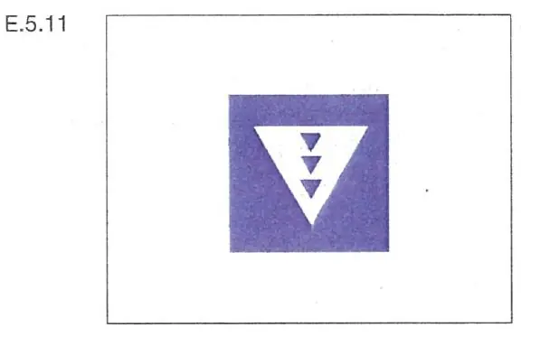 |
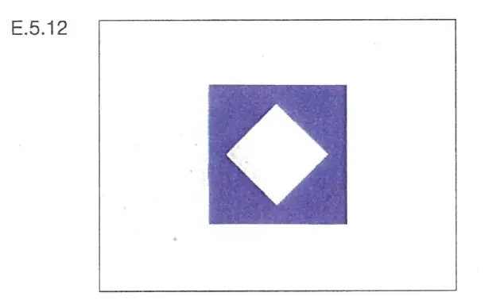 | 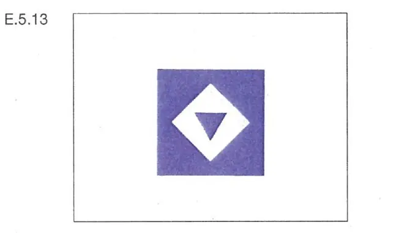 |
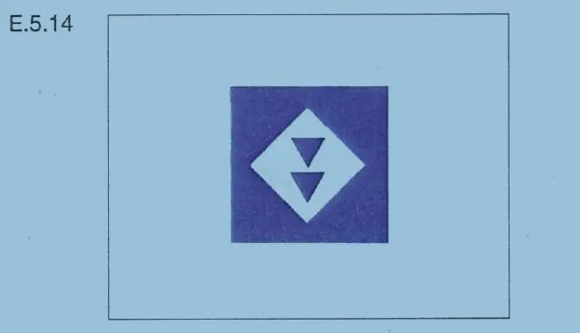 | 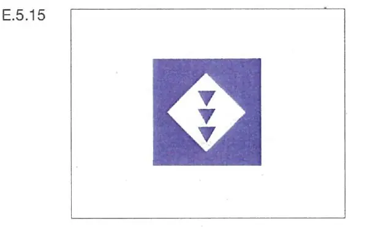 |
2. | Die Liegestellen sind, soweit nichts anderes bestimmt ist, auf der Seite der Wasserstraße, auf der das Tafelzeichen steht, vom Ufer aus und ein Fahrzeug neben dem anderen zu belegen. |
3. | An Liegestellen, bei denen das Tafelzeichen B.12 (Anlage 7) aufgestellt ist, sind alle Fahrzeuge verpflichtet, sich an einen betriebsbereiten Landstromanschluss anzuschließen und ihren gesamten Bedarf an elektrischer Energie während des Stillliegens daraus zu decken. Ausnahmen vom Gebot nach Satz 1 können auf einem rechteckigen weißen zusätzlichen Schild angegeben werden, das unterhalb des Tafelzeichens B.12 angebracht ist. |
4. | Nummer 3 findet keine Anwendung auf Fahrzeuge, die während des Stillliegens ausschließlich eine Energieversorgung nutzen, welche keine Geräusche sowie keine gasförmigen Schadstoffe und luftverunreinigenden Partikel verursacht. |